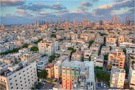
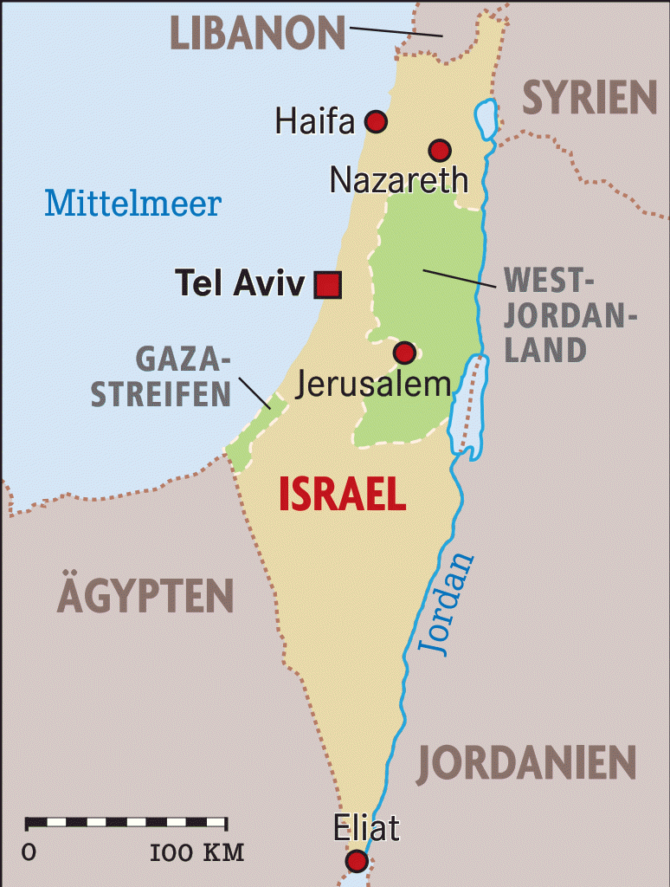

Shalom, Israel!
Grüßt euch!  Hier könnt ihr mehr über den Austausch zweier Partnerschulen, unserer Schule, der Klaus-Groth-Schule und der israelischen Partnerschule Tichon HaMoschava aus Zichron Yaacov erfahren.
Doch wieso überhaupt Israel? Israel ist aus vielen verschiedenen Gründen eine lohnenswerte Erfahrung. Die 2.000 Jahre alte Geschichte Israels bietet viele Schauplätze, so befinden sich dort unzählige biblische Orte und somit das Herz und der Ursprung des jüdischen und christlichen Glaubens.
Hier treffen drei der großen Weltreligionen, Christentum, Judentum, der Islam sowie Kultur, Geschichte und Gegenwart aufeinander.
Außerdem lässt das Klima in Israel im Gegensatz zu Deutschland nichts zu wünschen übrig.
Trotz all dieser Gründe nach Israel zu reisen sollte man nicht vergessen die politische Lage immer im Auge zu behalten, denn verschiedene Glaubensrichtungen können zu Spannungen führen. Da der letzte Austausch ein voller Erfolg war und uns erfahrene Lehrer und Reiseführer zur Seite stehen, gibt es aber keinen Grund zur Sorge.
Go Israel, doch wo ist das Überhaupt ?
 Israel misst eine Fläche von ungefähr 21.000 Quadratkilometern und ist somit in etwa so groß wie Hessen. So klein es geografisch auch ist, so groß und bedeutsam ist es für die Menschen und ihren Glauben. Wenn man genau auf die Karte schaut, kann man sehen, dass Israel an einem Knotenpunkt liegt, und zwar zwischen Asien, Europa und Afrika. Es grenzt im Norden an den Libanon, im Nordosten an Syrien, im Osten an Jordanien und im Süden an Ägypten. Die südliche Spitze Israels liegt direkt am Roten Meer, genauer am Golf von Akaba. Israel besitzt vielfältige Landschaften. Mehr als die Hälfte des Landes nimmt die Wüste ein, wovon die Negev-Wüste die größte ist. Nur einen kleinen Teil des Landes machen Wald und Gebirge aus, dafür gibt es aber auch schöne Strände und weitläufige Küsten.